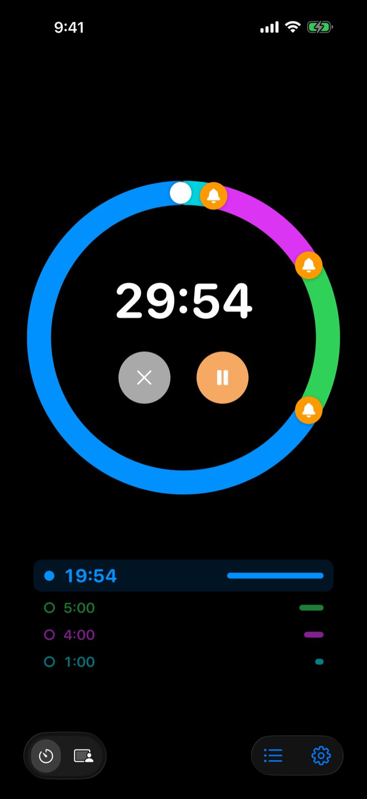
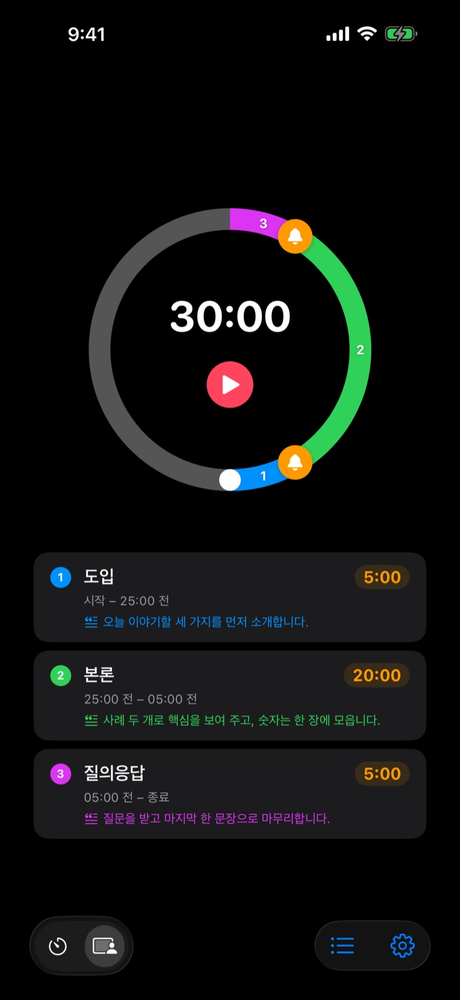
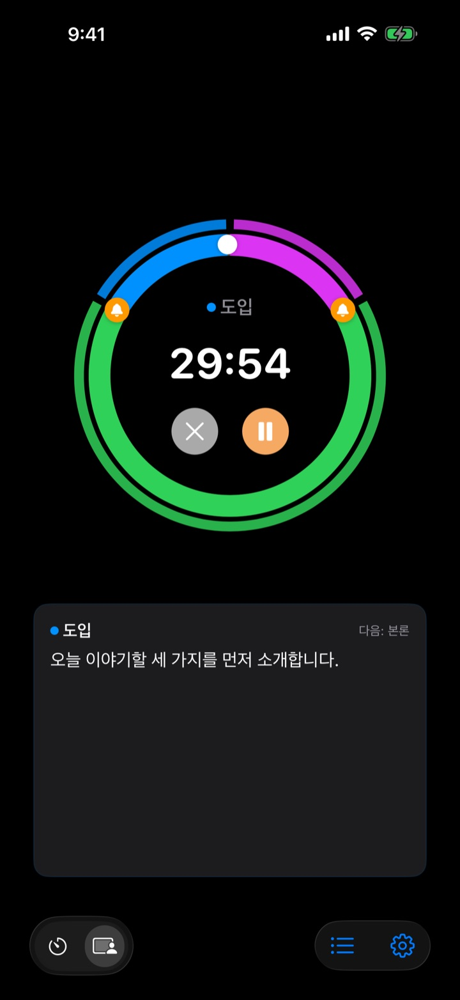

끝나고 나서가 아니라
끝나기 전에
발표 5분 전, 회의 마무리 3분 전. 원하는 시점마다 미리 알려 주니 시계를 힐끔거리지 않고 하던 일에 집중할 수 있습니다.
예비 알림은 개수 제한 없이 무료입니다. iPhone, Apple Watch, Mac.
직접 돌려 보세요
길이와 알림 시점을 고르고 빨간 버튼을 누르세요. 1분이 1초로 빠르게 흐르고, 알림 차례가 오면 소리와 함께 알려 줍니다.
타이머가 울렸을 땐 이미 늦었던 적 있나요?
기본 타이머는 0이 되어서야 울립니다. 발표는 결론을 꺼내기도 전에 끝나고, 수업은 정리 없이 종이 치고, 회의는 결정 없이 다음 일정에 밀립니다. 필요한 건 끝났다는 소리가 아니라 마무리할 시간이 남았을 때의 신호입니다.
끝나기 전에, 원하는 만큼 미리
다이얼 위의 종을 끌어 10분 전, 5분 전, 1분 전처럼 원하는 시점에 둡니다. 개수 제한은 없고, 알림마다 "슬라이드 마무리" 같은 문구를 붙일 수 있습니다.
화면이 꺼져 있어도 잠금 화면과 다이나믹 아일랜드에 남은 시간이 보이고, Apple Watch는 손목에서 조용히 진동합니다.

발표를 구간으로 나눕니다
도입 5분, 본론 20분, 질의응답 5분처럼 구간마다 이름과 대본을 적어 둡니다. 구간이 바뀌는 순간마다 그 구간 이름으로 알려 주니 시간 배분이 저절로 지켜집니다. (Pro)

지금 할 말이 화면에 떠 있습니다
진행 중에는 지금 구간의 대본과 다음 구간이 크게 보입니다. 시간을 넘기면 0에서 멈추지 않고 얼마나 넘겼는지 계속 셉니다. (Pro)

시작은 세 단계면 됩니다
- 1
시간을 정합니다
다이얼을 돌리거나 시간을 눌러 직접 넣습니다. 한 바퀴가 60분, 두 바퀴면 120분입니다.
- 2
알림을 둡니다
위쪽의 1:00, 5:00 같은 칩을 누르거나 종을 다이얼 위로 끌어 놓습니다.
- 3
시작하고 잊어버립니다
화면을 꺼도 정해 둔 순간마다 iPhone과 Apple Watch가 알려 줍니다.
이렇게 맞춰 많이 씁니다
- 발표 20분
- 5분 전 "결론으로 넘어가기", 1분 전 "마무리 인사"
- 수업 50분
- 10분 전 "과제 안내", 3분 전 "정리"
- 회의 30분
- 5분 전 "결정 사항 정리"
- 필라테스·요가 세션
- 동작마다 구간을 나눈 세션 모드 (Pro)
- 공부 25분
- 5분 전, 끝나면 휴식
- 운동 세트 사이 휴식 3분
- 30초 전 "다음 세트 준비"
- 멘토링·상담 1시간
- 15분 전, 5분 전
자주 쓰는 설정은 템플릿으로 저장해 두면 한 번에 불러옵니다 (기억 이상). 단축어와 Siri로 타이머를 시작하거나 멈출 수도 있습니다.
예비 알림은 무료, 기억이 필요하면 유료
무료
- 예비 알림 개수 제한 없음
- 알림마다 직접 쓰는 문구
- 잠금 화면과 다이나믹 아일랜드의 Live Activity
- 확인할 때까지 계속 알리기, 끝나면 알람으로 울리기
- Apple Watch 앱과 Mac 메뉴 막대
- 모든 테마 색
기억 · Pro
- 기억: 설정을 템플릿으로 저장하고 한 번에 불러오기
- 기억: 앱을 다시 열면 마지막 설정 그대로
- Pro: 기억 전부와 세션 모드(구간 이름과 대본)
- Pro: 오버타임, 기록과 통계
기억과 Pro는 각각 연 구독 또는 한 번 결제로 평생 중에 고릅니다. 세션 모드, 오버타임, 기록은 결제 전에 몇 번 먼저 써 볼 수 있습니다.
광고는 없습니다. 언제나 평생 패스 하나로 Leeo가 만든 모든 앱을 열 수도 있습니다.
자주 묻는 질문
알림이 울리지 않았어요.
대부분 권한이나 집중 모드 문제입니다. 앱의 설정 › 알림 방식에서 알림 권한을 확인하고, 집중 모드를 쓰면 iOS 설정 › 집중 모드에서 두번알림을 허용 앱으로 추가해 주세요. 무음 모드에서는 진동만 옵니다. iOS 설정 › 알림 › 예약된 요약에 들어가 있으면 알림이 묶여 늦게 오니 빼 주세요.
무음 모드에서도 끝난 걸 알 수 있나요?
네. 설정에서 끝나면 알람으로 울리기를 켜면 무음 모드나 집중 모드에서도 크게 울립니다. 확인할 때까지 계속 알리기를 켜면 알림의 정지나 다시 알림을 누를 때까지 계속 알립니다.
Apple Watch와 동기화가 안 돼요.
앱의 설정 › 내 기기를 열면 어느 단계가 빠졌는지 보여 줍니다. 워치가 이 iPhone에 페어링되어 있고, 워치에 두번알림이 설치되어 있고, 설치한 뒤 워치에서 앱을 한 번 실행했는지 확인해 주세요. 그 뒤로는 워치 앱이 꺼져 있어도 타이머 상태가 넘어갑니다.
Mac이 연결 안 됨으로 나와요.
연결됨은 최근 10분 안에 그 Mac에서 앱이 켜져 있었다는 뜻이라, 방금 깨어난 Mac은 몇 분 뒤에 나타납니다. 두 기기가 같은 iCloud 계정에 로그인되어 있고 iCloud Drive가 켜져 있어야 합니다. Mac은 macOS 26 이상이 필요합니다.
구매했는데 적용이 안 돼요.
결제 화면에서 구매 복원을 눌러 주세요. 결제한 Apple 계정과 같은 계정으로 로그인되어 있어야 합니다. 평생으로 산 것은 앱을 지웠다 깔거나 기기를 바꿔도 그대로 돌아옵니다.
저장해 둔 템플릿이 잠겼어요.
템플릿은 사라지지 않습니다. 기억이나 Pro가 없으면 잠긴 채로 남아 있다가, 결제하면 바로 다시 열립니다.
환불하고 싶어요.
환불은 Apple이 처리합니다. 결제한 Apple 계정으로 reportaproblem.apple.com에서 요청해 주세요. 고장 때문이라면 저에게도 알려 주시면 다음 사람이 같은 문제를 겪지 않도록 고치겠습니다.
설치하지 않고 먼저 써 볼 수 있나요?
iPhone에서 m1zz.github.io/rereminder를 열면 App Clip으로 타이머가 바로 돕니다. 다이얼과 알림은 그대로이고, 템플릿과 세션 모드, 워치 앱은 정식 앱에 있습니다.
어떤 기기에서 쓸 수 있나요?
iPhone은 iOS 26 이상, Apple Watch는 watchOS 11.6 이상, Mac은 macOS 26 이상입니다. iPad는 아직 지원하지 않습니다. 앱은 24개 언어로 나옵니다.
제 데이터는 어디에 저장되나요?
타이머, 템플릿, 구간 이름, 대본, 기록은 모두 기기 안에 있습니다. 앱을 지우면 함께 사라집니다. 앱을 고치는 데 쓰는 익명 사용 통계만 보내며, 자세한 내용은 개인정보처리방침에 적어 두었습니다.
궁금한 점이나 의견은 leeo@kakao.com로 보내 주세요. 보통 2~3일 안에 답장드립니다.